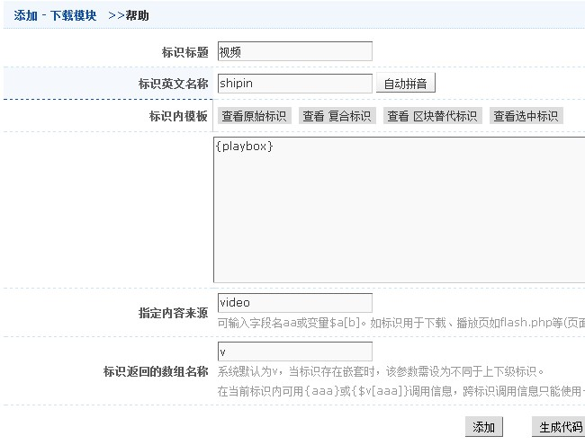

效果:
标识模板(template)代码:
<embed width="100%" height="100%" align="middle" allowfullscreen="true" type="application/x-shockwave-flash"
allowscriptaccess="sameDomain" quality="high" src="http://player.youku.com/player.php/sid/XMjUzMTg4Mjk2/v.swf">
说明
调用视频内容。
整体截图如下
